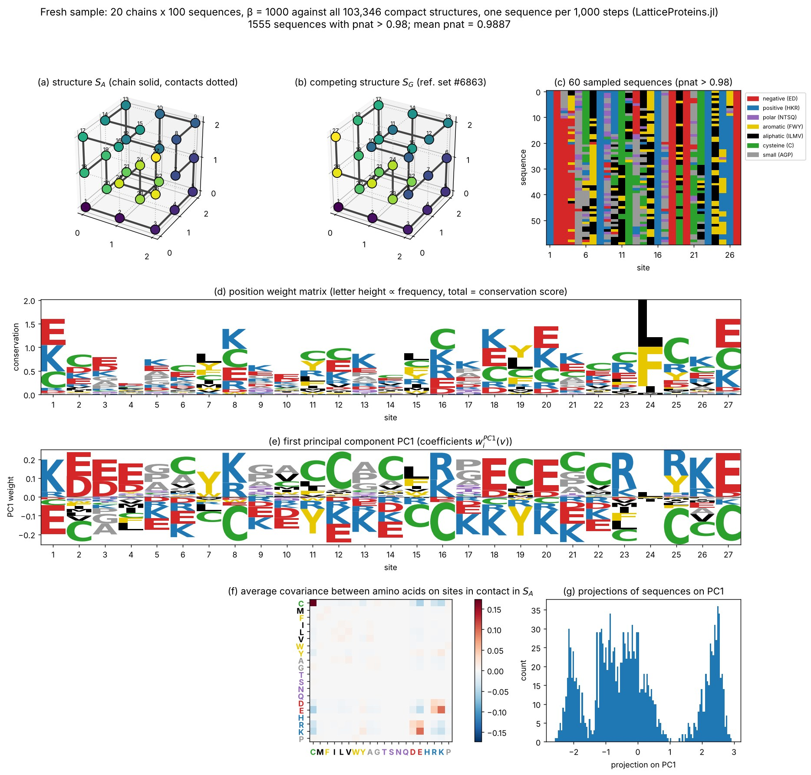

Reproducing Fig. 4 of Tubiana et al. (2019)
This page reproduces Fig. 4 of
Tubiana, J., Cocco, S., and Monasson, R. "Learning compositional representations of interacting systems with restricted Boltzmann machines: comparative study of lattice proteins." Neural Computation 31.8 (2019): 1671–1717. doi:10.1162/necoa01210 (arXiv:1902.06495)
with alignments sampled by this package, first against the subset of 10,000 structures used in the paper (SHAKHNOVICH_STRUCTURES) and then against all 103,346 compact structures (STRUCTURES). The figures below are pre-rendered; they are not regenerated when the documentation is built (see Regenerating the figures at the end of this page).
What the figure shows
The figure summarizes the "main features of lattice-protein sequence alignments" that the paper then models with restricted Boltzmann machines. The data are an alignment of sequences that fold specifically into structure $S_A$ (CONTACT_MAP_A), that is, with folding probability $P_\text{nat}(S_A \mid v) > 0.995$. Following Jacquin et al. (2016), the sequences are generated by Metropolis Monte Carlo at inverse temperature $\beta = 1000$ on the effective energy $-\log P_\text{nat}$, keeping one sequence every 1,000 steps.
- (a), (b) Structure $S_A$ and a competing structure $S_G$, in which residues 1 and 26 are neighbours. The paper does not say which structure $S_G$ is; we use structure 6863 of the reference set, which is the most frequent runner-up fold of the alignment's sequences and has that contact. Chain bonds are drawn solid, contacts dotted.
- (c) A subset of the sampled sequences, coloured by amino acid class.
- (d) Position weight matrix: at each site the total height is the conservation score $\log 20 + \sum_v f_i(v) \log f_i(v)$ and each letter is proportional to its frequency $f_i(v)$. Sites are either non-conserved or partly conserved; the most conserved sites (1, 18, 24, 25) carry charged residues forming salt bridges, or hydrophobic residues in the core.
- (e) First principal component of the one-hot encoded alignment. It is dominated by the signs of the charges on a few pairs of contacting sites (for example 1–18, 2–20, 3–26): the alignment splits into two subfamilies with opposite charge patterns, which the paper relates to the "prototype" versus "compositional" representations learnt by RBMs.
- (f) Average covariance between amino acids $v, v'$ on pairs of sites in contact in $S_A$, $C(v, v') = \frac{1}{28}\sum_{ij} c^{(S_A)}_{ij}\,[f_{ij}(v, v') - f_i(v) f_j(v')]$. The largest entry is cysteine–cysteine, followed by positive covariances between opposite charges (E–K, E–R, D–K, D–R) and negative ones between like charges, reflecting the Miyazawa–Jernigan interactions through which amino acids interact.
- (g) Histogram of the projections of the sequences on the first principal component, showing the two subfamilies.
Sampling protocol
Both versions below were sampled with metropolis! at $\beta = 1000$, keeping one sequence every 1,000 steps after a burn-in of 10,000 steps, exactly as in the paper, and then keeping the sequences with $P_\text{nat} > 0.995$. One difference matters in practice: at $\beta = 1000$ a chain almost never crosses between the two subfamilies of panel (g) (doing so requires passing through sequences with lower $P_\text{nat}$), so a single chain samples essentially one subfamily. The proportion of the two subfamilies in the original alignment is recovered only by running several independent chains. The reference alignment of Jacquin et al. (2016) shipped with the package (Hugo_MSA(:A)) is used as the ground truth for the published model.
Version 1: against the subset of 10,000 structures
This is the model of the paper: structures = SHAKHNOVICH_STRUCTURES. The alignment was sampled with 4 chains of 9,000 sequences each (36,000 sequences, as in the paper).

Agreement with the reference alignment of Jacquin et al. (sequences with $P_\text{nat} > 0.995$ in both cases):
| statistic | fresh sample vs. reference alignment |
|---|---|
| site frequencies $f_i(v)$ | Pearson $r = 0.997$ |
| conservation profile (panel d) | Pearson $r = 0.999$ |
| first principal component (panel e) | $\lvert\cos\rvert = 0.998$ |
| contact covariance $C(v, v')$ (panel f) | Pearson $r = 0.9995$ |
| mean $P_\text{nat}$ | $0.9964$ in both |
The only visible difference is the relative weight of the two subfamilies in panel (g) (60/40 here against 43/57 in the reference), which, as explained above, is set by the basins the 4 chains fell into rather than by the model.
Version 2: against all 103,346 compact structures
Same protocol with the default structure set, structures = STRUCTURES, sampled with 20 chains of 100 sequences each. This is a stricter model: $P_\text{nat}$ is now computed against ten times more competitors, so the sequences must fold specifically against all of them.

The paper's criterion $P_\text{nat} > 0.995$ is not reached with this protocol under the full model. At $\beta = 1000$ the sampled sequences have a mean $P_\text{nat}$ of 0.984 (median 0.988, 95th percentile 0.993), still slowly increasing after 100,000 steps, and only 2 of the 2,000 sequences exceed 0.995. With ten times more competing structures, folding into $S_A$ with the same specificity requires a stronger selection (a larger $\beta$), and the Monte Carlo dynamics relax more slowly. The figure therefore keeps the sequences with $P_\text{nat} > 0.98$ (1,555 of 2,000), so the differences with version 1 reflect both the model and this lower stringency.
| statistic | full model vs. reference alignment |
|---|---|
| site frequencies $f_i(v)$ | Pearson $r = 0.73$ |
| conservation profile (panel d) | Pearson $r = 0.74$ |
| first principal component (panel e) | $\lvert\cos\rvert = 0.37$ |
| contact covariance $C(v, v')$ (panel f) | Pearson $r = 0.94$ |
| mean $P_\text{nat}$ | $0.989$ vs. $0.996$ |
What changes when all compact structures compete:
- Negative design is stronger. The average covariance between cysteines on contacting sites doubles (0.17 against 0.09) and the E–K covariance grows (0.10 against 0.06): with more competing folds, the sequences rely more on cysteine pairs and salt bridges placed on the contacts of $S_A$. Cysteine becomes frequent at sites 2, 8, 11, 16, 18, 25 and 27 (panel d).
- Sites are more conserved on average (mean conservation score 0.97 against 0.75), the most conserved being 24, 1, 27, 20 and 16.
- The leading principal component is no longer a single charge pattern. The top three eigenvalues of the covariance matrix are 2.3, 1.7 and 1.5, against 1.6, 0.8 and 0.5 for the paper's model, so no single direction dominates; PC1 mixes cysteine-pair patterns with charges and the projection histogram (g) shows several clusters. Part of this clustering is a sampling effect: with 20 chains that rarely leave their basin, each cluster also reflects a few chains.
The contact covariance matrix (panel f) keeps the same structure in both versions ($r = 0.94$): the physics that the paper reads from it, contacts stabilized by cysteine pairs and by opposite charges, is the same under both models.
Raising the selection strength does not simply restore the paper's stringency. With $\beta = 3000$ and a burn-in of 50,000 steps (sample_msa.jl all 20 100 out.txt 3000 50000), each chain reaches a stationary $P_\text{nat}$ within its basin, but the basins differ: 14 of the 20 chains settle at $P_\text{nat}$ between 0.992 and 0.996, while the other 6 stay trapped between 0.93 and 0.98 for the whole run, and no chain ever leaves its basin. Overall 16% of the sequences exceed 0.995 (70% exceed 0.99). Under the full model the sequence landscape at these selection strengths is glassy, and sampling the equilibrium ensemble at the paper's stringency would require a better sampler (for example many more chains, or parallel tempering) rather than longer runs.
Regenerating the figures
The scripts that produced the figures are in docs/figures/tubiana2019/ and are not run by the documentation build:
sample_msa.jlsamples an alignment (shakhnovichorallstructure set, number of chains and of sequences per chain); it uses Julia threads, one chain per thread;analyze_msa.jlcomputes the statistics of panels (c)–(g) and the lattice walks of $S_A$ and $S_G$ from an alignment file;plot_fig4.pydraws the figure with matplotlib and logomaker from those statistics;compare_stats.pycompares the statistics of two alignments.
julia -t 4 --project=. docs/figures/tubiana2019/sample_msa.jl shakhnovich 4 9000 msa_subset.txt
julia --project=. docs/figures/tubiana2019/analyze_msa.jl msa_subset.txt stats_subset
python docs/figures/tubiana2019/plot_fig4.py stats_subset fig4_subset.png "subset of 10,000 structures"A smaller version of this comparison runs in the test suite (test/tubiana2019.jl): it samples 20 short chains against the subset of 10,000 structures and checks the statistics of panels (d)–(g) against the reference alignment.